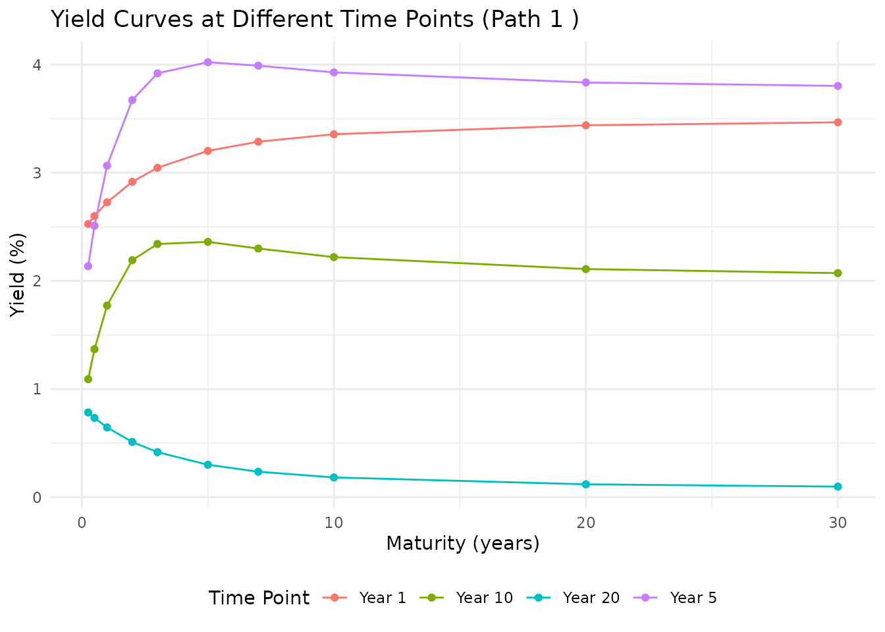
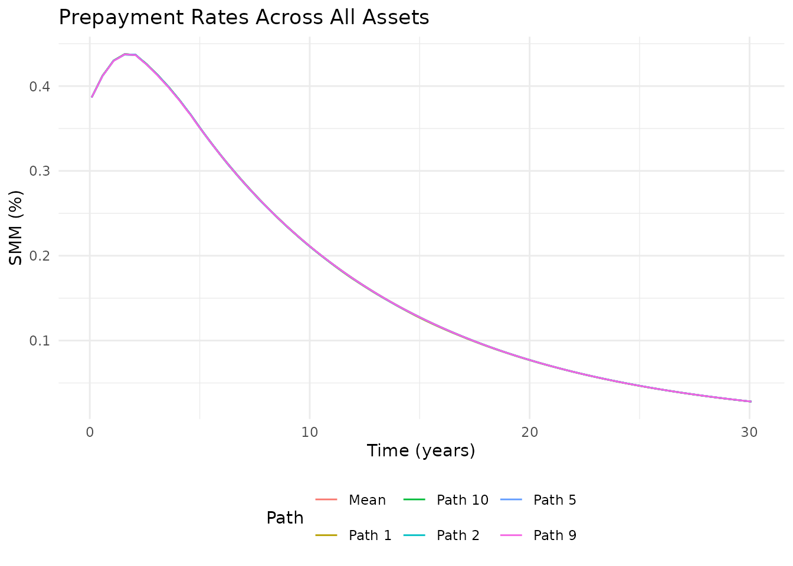
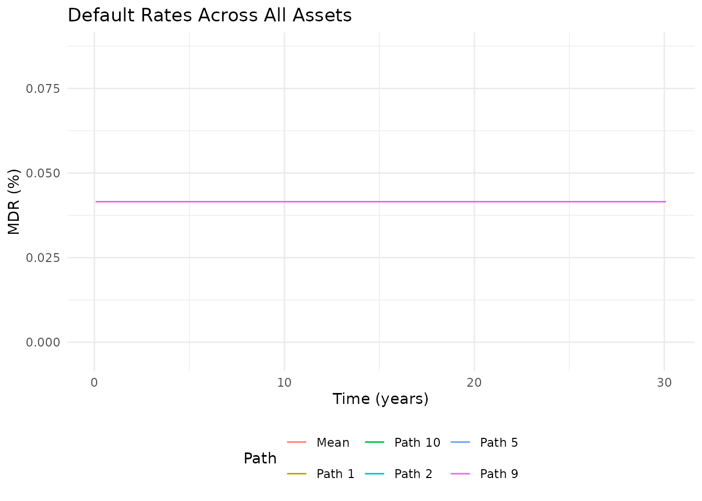
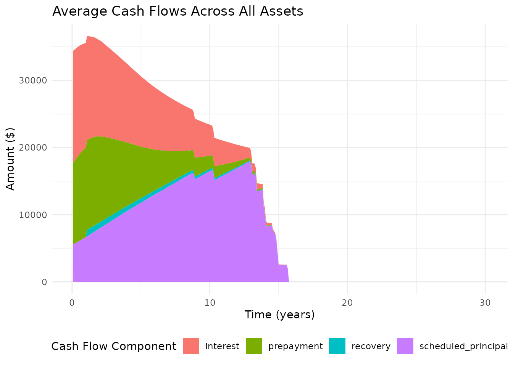
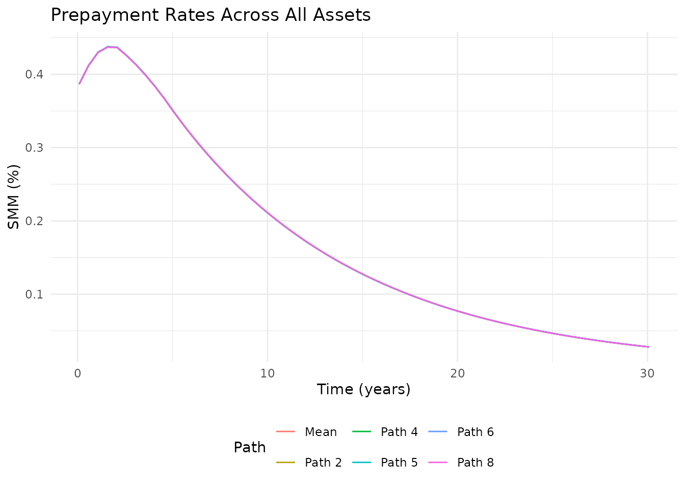
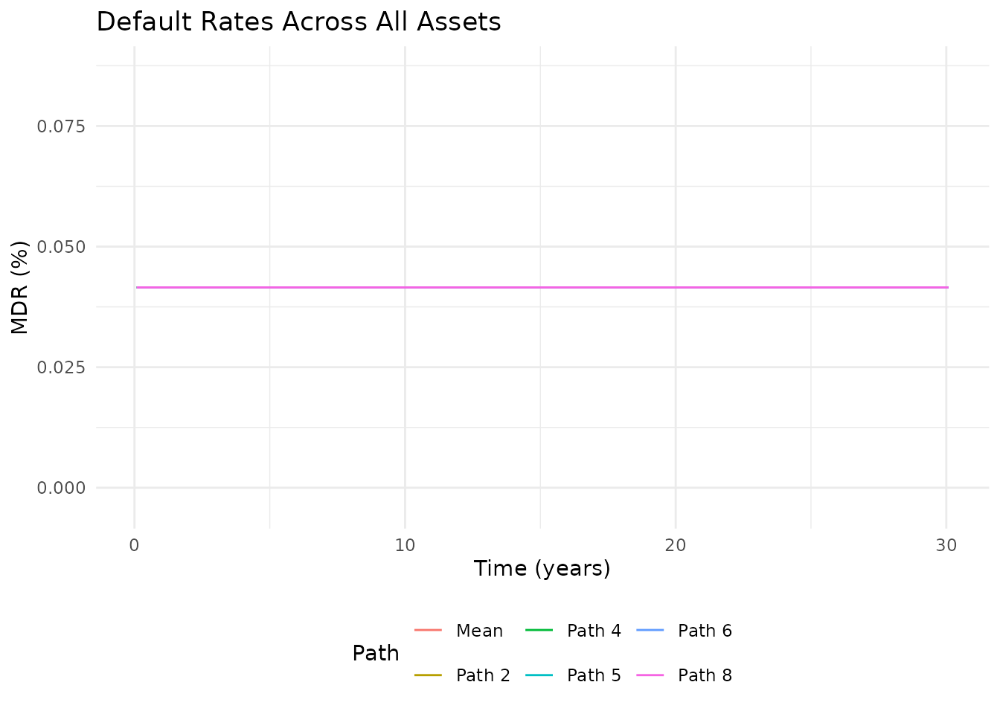
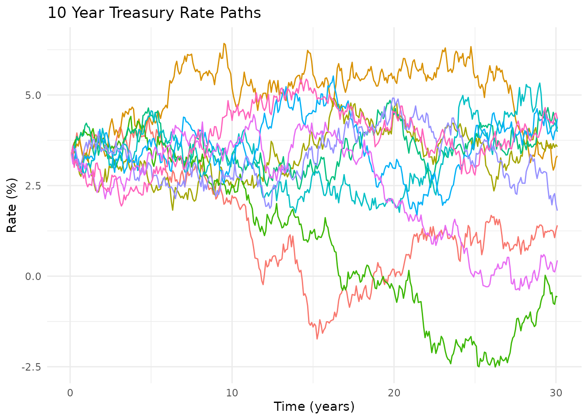
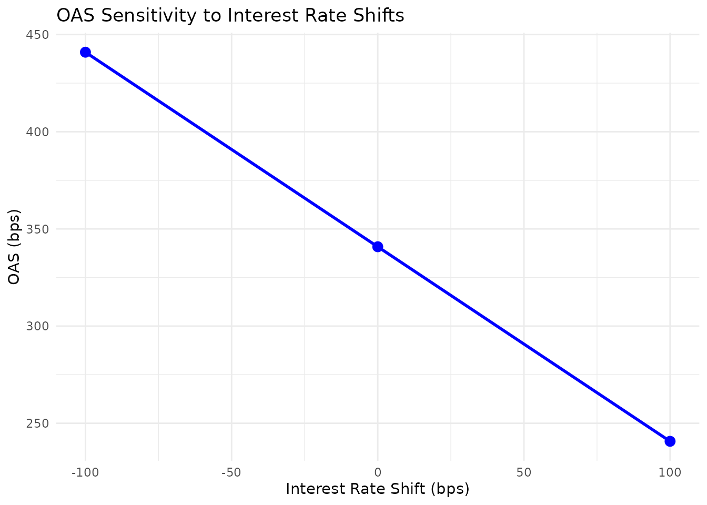

Introduction to oasr
Ariel R. H.
2026-10-11
Source:vignettes/introduction-to-oasr.Rmd
introduction-to-oasr.RmdIntroduction
The oasr package provides a comprehensive toolkit for
option-adjusted spread (OAS) analysis of fixed income securities, with a
focus on asset-backed securities (ABS) and mortgage-backed securities
(MBS). This vignette demonstrates the basic workflow for performing OAS
analysis using the package.
Installation
You can install the development version of oasr from
GitHub:
# Install devtools if not already installed
if (!requireNamespace("devtools", quietly = TRUE)) {
install.packages("devtools")
}
# Install oasr
devtools::install_github("ambientpointcorp/oasr")Load Sample Data
The package includes sample data for demonstration:
# Load sample asset data
data(sample_abs_data)
# Take a look at the data
head(sample_abs_data)
#> asset_id original_balance balance wac servicing io_strip accrual_method
#> 1 L001 350000 341533.6 0.0625 0.0025 0.0010 30/360
#> 2 L002 198000 186393.9 0.0550 0.0025 0.0010 30/360
#> 3 L003 425000 420781.7 0.0712 0.0030 0.0015 30/360
#> 4 L004 150000 128072.5 0.0488 0.0025 0.0010 30/360
#> 5 L005 275000 258158.2 0.0675 0.0030 0.0015 30/360
#> 6 L006 520000 438256.4 0.0425 0.0025 0.0010 30/360
#> term age ltv fico state property_type occupancy_type
#> 1 360 24 0.80 742 CA SFR PRIMARY
#> 2 360 48 0.72 768 NY SFR PRIMARY
#> 3 360 12 0.90 668 FL CONDO INVESTMENT
#> 4 180 36 0.65 790 TX SFR PRIMARY
#> 5 360 60 0.85 705 IL MULTI INVESTMENT
#> 6 360 96 0.58 781 WA SFR PRIMARYSimulate Interest Rate Paths
First, we need to simulate interest rate paths using the
dnsr package’s DNS model capabilities:
# In a real analysis, we would calibrate DNS parameters from market data
# dns_params <- dnsr::get_calibrated_dns_params()
# For this vignette, we'll create some sample parameters
dns_params <- list(
params = list(
kappa = c(0.02, 0.3, 0.5), # Mean-reversion speeds
theta = c(0.04, -0.02, 0.01), # Long-run means
sigma = c(0.005, 0.01, 0.02), # Volatilities
names = c("Level", "Slope", "Curvature"),
lambda = 0.7308
),
initial_factors = c(0.035, -0.015, 0.005),
# The decay rate is per year, as `maturities` below is. Diebold and
# Li's conventional 0.0609 is per month, hence 0.0609 * 12 here.
lambda = 0.7308
)
# Simulate 100 interest rate paths for 360 months (30 years)
# engine = "exact" samples the exact transition law, so the vignette builds
# without the optional yuima package.
rate_paths <- simulate_rates(dns_params, n_paths = 10, n_periods = 360, seed = 42,
maturities = c(0.25, 0.5, 1, 2, 3, 5, 7, 10, 20, 30),
engine = "exact")Let’s visualize some of the simulated rate paths:
# Plot 10 random paths of the 10-year rate
plot_rate_paths(rate_paths, maturity = "10", sample_size = 10)
And look at yield curves at different time points:
# Plot yield curves at different time points
plot_yield_curves(rate_paths, time_points = c(0, 1, 5, 10, 20), path_idx = 1)
Define a Prepayment Model
Next, we need to define a prepayment model that specifies how loans prepay in response to various factors:
# Create a CPR/CDR prepayment model
prepay_model <- prepayment_model(
type = "cpr_cdr",
base_cpr = 0.06, # 6% CPR base rate
base_cdr = 0.01, # 1% CDR base rate
recovery_rate = 0.65, # 65% recovery on defaults
recovery_lag = 12, # 12-month lag to recovery
seasoning = 1.0, # Seasoning multiplier
burnout_factor = 0.3, # Burnout factor
rate_sensitivity = 1.0 # Sensitivity to rate changes
)
# Alternative: Use a PSA model
psa_model <- psa_prepayment_model(
psa_multiplier = 1.0, # 100% PSA
base_cdr = 0.01, # 1% CDR base rate
recovery_rate = 0.65 # 65% recovery on defaults
)
# Alternative: Use a survival model
survival_model <- survival_prepayment_model(
prepay_hazard = 0.005, # 0.5% monthly prepayment hazard
default_hazard = 0.001, # 0.1% monthly default hazard
recovery_rate = 0.65 # 65% recovery on defaults
)Calculate OAS
Now we can perform the OAS calculation:
# Calculate OAS with a target market price of 101.5
oas_result <- calculate_oas(
asset_data = sample_abs_data,
rate_paths = rate_paths,
prepay_model = prepay_model,
market_price = 101.5,
max_iterations = 50,
verbose = FALSE
)
# Print the OAS result
print(oas_result)
#> Option-Adjusted Spread (OAS) Analysis Result
#> --------------------------------------------
#> OAS: 340.82 bps
#> Model Price: 101.4987
#> Market Price: 101.5
#> Price Error: 0.0013
#> Weighted Average Life: 6.85 years
#> Effective Duration: -5.43
#> Effective Convexity: 44.31
#> Convergence: Yes
#> Iterations: 10
#> Execution Time: 0.12 seconds
# Get a more detailed summary
summary(oas_result)
#> $overall
#> Metric Value
#> 1 OAS (bps) 340.8200
#> 2 Model Price 101.4987
#> 3 Market Price 101.5000
#> 4 Price Error 0.0013
#> 5 Weighted Average Life (years) 6.8500
#> 6 Effective Duration -5.4300
#> 7 Effective Convexity 44.3100
#>
#> $convergence
#> $convergence$converged
#> [1] TRUE
#>
#> $convergence$iterations
#> [1] 10
#>
#>
#> $execution_time
#> Time difference of 0.1174974 secs
#>
#> $asset_info
#> Asset Balance WAC WAL.by_asset WAL.overall_wal Duration Convexity
#> 1 1 341533.6 0.0625 6.984802 6.853683 -5.508256 45.36833
#> 2 2 186393.9 0.0550 7.266875 6.853683 -5.732469 49.80573
#> 3 3 420781.7 0.0712 6.938769 6.853683 -5.417173 42.58651
#> 4 4 128072.5 0.0488 4.335340 6.853683 -3.779292 20.50817
#> 5 5 258158.2 0.0675 7.105955 6.853683 -5.543066 45.83865
#> 6 6 438256.4 0.0425 7.865279 6.853683 -6.234369 58.24565
#> 7 7 308597.9 0.0750 6.967977 6.853683 -5.395278 41.47543
#> 8 8 194644.7 0.0588 5.196522 6.853683 -4.358314 27.42266
#> 9 9 156360.9 0.0638 7.801625 6.853683 -6.026806 53.18247
#> 10 10 455033.8 0.0525 7.292543 6.853683 -5.780897 50.06268
#> 11 11 285520.2 0.0600 6.857730 6.853683 -5.432689 44.30675
#> 12 12 191388.3 0.0562 7.630780 6.853683 -5.959489 52.97422Visualize OAS Results
The package provides various visualization functions:
# Plot cash flows
plot(oas_result, type = "cashflows")
# Plot prepayment rates
plot(oas_result, type = "prepayments")
#> $prepay
#>
#> $default
# Plot rate paths
plot(oas_result, type = "rates")
# Plot all three
plots <- plot(oas_result, type = "all")
plots$cashflows
plots$prepayments
#> $prepay
#>
#> $default
plots$rates
Sensitivity Analysis
We can analyze how OAS is affected by changes in interest rates and prepayment speeds:
# Run sensitivity analysis
sensitivity <- run_oas_sensitivity(
oas_result,
sensitivity_type = "rates",
rate_shifts = c(-100, 0, 100),
max_iterations = 12,
verbose = FALSE
)
# Print sensitivity results
print(sensitivity)
#> OAS Sensitivity Analysis
#> ----------------------
#> Base OAS: 340.82 bps
#> Base Price: 101.4987
#> Base WAL: 6.85 years
#>
#> Interest Rate Sensitivity:
#> shift oas price wal
#> 1 -100 440.9180 101.4944 6.856630
#> 2 0 340.8203 101.4987 6.853683
#> 3 100 240.7227 101.5029 6.851397
# Plot sensitivity analysis results
sensitivity_plots <- plot(sensitivity)
sensitivity_plots$oas_rate
For more advanced analysis, we can create a 2D surface of OAS sensitivity:
# Create OAS surface
surface <- create_oas_surface(
oas_result,
rate_shifts = seq(-200, 200, by = 50),
prepay_multipliers = seq(0.5, 2.0, by = 0.25)
)
# Plot OAS surface
plot(surface, type = "oas")Structured Securities (ABS/MBS)
The package also supports analysis of structured securities:
# Load sample deal structure
data(sample_deal_structure)
# Calculate OAS for structured security
structured_oas <- calculate_oas(
asset_data = sample_abs_data,
rate_paths = rate_paths,
prepay_model = prepay_model,
market_price = 101.0,
deal_structure = sample_deal_structure
)
#> Starting OAS calculation with binary search...
#> Market price: 101
#> Search range: -500 to 500 bps
#> Tolerance: 0.01
#> Calculating price with OAS = 0 bps...
#> Iteration 1: OAS = 0.00 bps, Price = 119.8436, Target = 101.0000, Error = 18.8436
#> Calculating price with OAS = 250 bps...
#> Iteration 2: OAS = 250.00 bps, Price = 103.3207, Target = 101.0000, Error = 2.3207
#> Calculating price with OAS = 375 bps...
#> Iteration 3: OAS = 375.00 bps, Price = 96.2878, Target = 101.0000, Error = 4.7122
#> Calculating price with OAS = 312.5 bps...
#> Iteration 4: OAS = 312.50 bps, Price = 99.7123, Target = 101.0000, Error = 1.2877
#> Calculating price with OAS = 281.25 bps...
#> Iteration 5: OAS = 281.25 bps, Price = 101.4928, Target = 101.0000, Error = 0.4928
#> Calculating price with OAS = 296.875 bps...
#> Iteration 6: OAS = 296.88 bps, Price = 100.5967, Target = 101.0000, Error = 0.4033
#> Calculating price with OAS = 289.0625 bps...
#> Iteration 7: OAS = 289.06 bps, Price = 101.0433, Target = 101.0000, Error = 0.0433
#> Calculating price with OAS = 292.9688 bps...
#> Iteration 8: OAS = 292.97 bps, Price = 100.8197, Target = 101.0000, Error = 0.1803
#> Calculating price with OAS = 291.0156 bps...
#> Iteration 9: OAS = 291.02 bps, Price = 100.9314, Target = 101.0000, Error = 0.0686
#> Calculating price with OAS = 290.0391 bps...
#> Iteration 10: OAS = 290.04 bps, Price = 100.9873, Target = 101.0000, Error = 0.0127
#> Calculating price with OAS = 289.5508 bps...
#> Iteration 11: OAS = 289.55 bps, Price = 101.0153, Target = 101.0000, Error = 0.0153
#> Adding damping to improve convergence
#> Calculating price with OAS = 289.7949 bps...
#> Iteration 12: OAS = 289.79 bps, Price = 101.0013, Target = 101.0000, Error = 0.0013
#> Converged within tolerance. OAS = 289.7949 bps
# Print results
print(structured_oas)
#> Option-Adjusted Spread (OAS) Analysis Result
#> --------------------------------------------
#> OAS: 289.79 bps
#> Model Price: 101.0013
#> Market Price: 101
#> Price Error: 0.0013
#> Weighted Average Life: 6.85 years
#> Effective Duration: -5.5
#> Effective Convexity: 45.27
#> Convergence: Yes
#> Iterations: 12
#> Execution Time: 0.18 secondsConclusion
This vignette has demonstrated the basic functionality of the
oasr package for option-adjusted spread analysis. The
package provides a flexible and comprehensive toolkit for analyzing
fixed income securities with embedded options, with a focus on
asset-backed and mortgage-backed securities.
For more advanced usage and additional features, please refer to the package documentation and other vignettes.